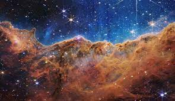
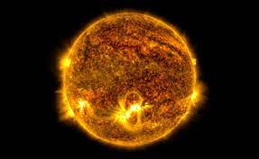
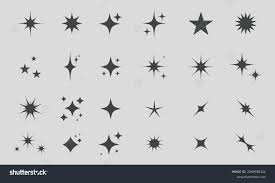

Üstökösök
Az üstökös olyan naprendszerbeli égitest,
amely a Nap körül, általában elnyújtott pályán kering,
és a Nap közelébe érve jellegzetesen fényes kómája és csóvája fejlődik.


Csillagok
Olyan égitestek, amely nukleáris energiát termelnek,
így saját fénnyel rendelkeznek.
